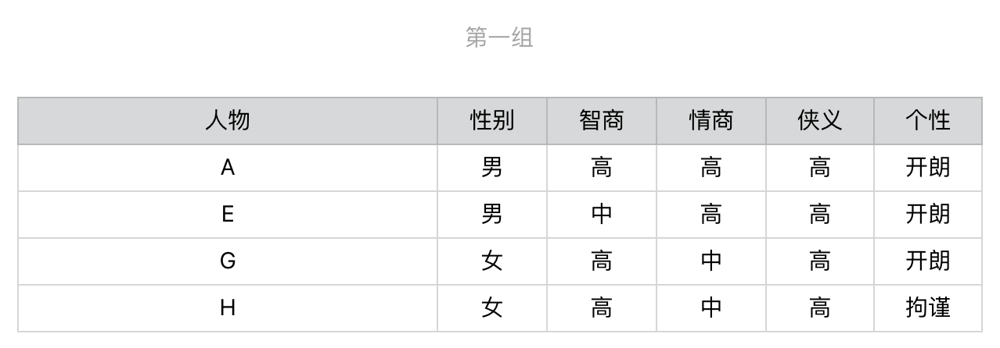
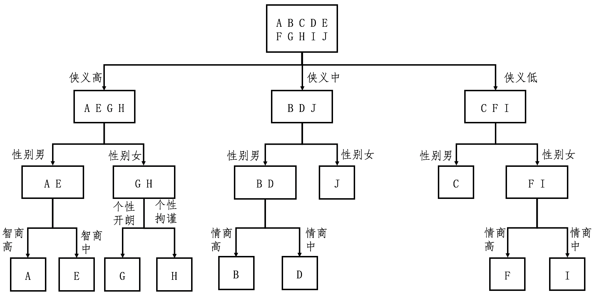
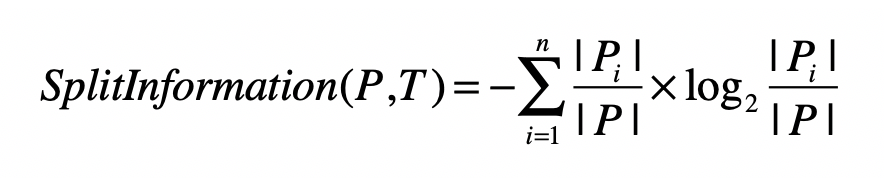
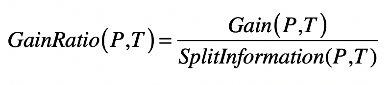
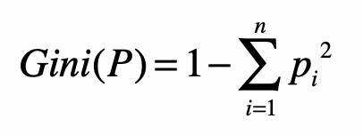
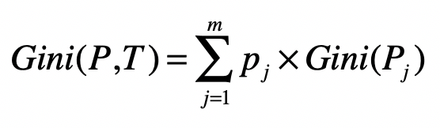

- 01 二进制：不了解计算机的源头，你学什么编程.md.html
- 02 余数：原来取余操作本身就是个哈希函数.md.html
- 03 迭代法：不用编程语言的自带函数，你会如何计算平方根？.md.html
- 04 数学归纳法：如何用数学归纳提升代码的运行效率？.md.html
- 05 递归（上）：泛化数学归纳，如何将复杂问题简单化？.md.html
- 06 递归（下）：分而治之，从归并排序到MapReduce.md.html
- 07 排列：如何让计算机学会“田忌赛马”？.md.html
- 08 组合：如何让计算机安排世界杯的赛程？.md.html
- 09 动态规划（上）：如何实现基于编辑距离的查询推荐？.md.html
- 10 动态规划（下）：如何求得状态转移方程并进行编程实现？.md.html
- 11 树的深度优先搜索（上）：如何才能高效率地查字典？.md.html
- 12 树的深度优先搜索（下）：如何才能高效率地查字典？.md.html
- 13 树的广度优先搜索（上）：人际关系的六度理论是真的吗？.md.html
- 14 树的广度优先搜索（下）：为什么双向广度优先搜索的效率更高？.md.html
- 15 从树到图：如何让计算机学会看地图？.md.html
- 16 时间和空间复杂度（上）：优化性能是否只是“纸上谈兵”？.md.html
- 17 时间和空间复杂度（下）：如何使用六个法则进行复杂度分析？.md.html
- 18 总结课：数据结构、编程语句和基础算法体现了哪些数学思想？.md.html
- 19 概率和统计：编程为什么需要概率和统计？.md.html
- 20 概率基础（上）：一篇文章帮你理解随机变量、概率分布和期望值.md.html
- 21 概率基础（下）：联合概率、条件概率和贝叶斯法则，这些概率公式究竟能做什么？.md.html
- 22 朴素贝叶斯：如何让计算机学会自动分类？.md.html
- 23 文本分类：如何区分特定类型的新闻？.md.html
- 24 语言模型：如何使用链式法则和马尔科夫假设简化概率模型？.md.html
- 25 马尔科夫模型：从PageRank到语音识别，背后是什么模型在支撑？.md.html
- 26 信息熵：如何通过几个问题，测出你对应的武侠人物？.md.html
- 27 决策树：信息增益、增益比率和基尼指数的运用.md.html
- 28 熵、信息增益和卡方：如何寻找关键特征？.md.html
- 29 归一化和标准化：各种特征如何综合才是最合理的？.md.html
- 30 统计意义（上）：如何通过显著性检验，判断你的A_B测试结果是不是巧合？.md.html
- 31 统计意义（下）：如何通过显著性检验，判断你的A_B测试结果是不是巧合？.md.html
- 32 概率统计篇答疑和总结：为什么会有欠拟合和过拟合？.md.html
- 33 线性代数：线性代数到底都讲了些什么？.md.html
- 34 向量空间模型：如何让计算机理解现实事物之间的关系？.md.html
- 35 文本检索：如何让计算机处理自然语言？.md.html
- 36 文本聚类：如何过滤冗余的新闻？.md.html
- 37 矩阵（上）：如何使用矩阵操作进行PageRank计算？.md.html
- 38 矩阵（下）：如何使用矩阵操作进行协同过滤推荐？.md.html
- 39 线性回归（上）：如何使用高斯消元求解线性方程组？.md.html
- 40 线性回归（中）：如何使用最小二乘法进行直线拟合？.md.html
- 41 线性回归（下）：如何使用最小二乘法进行效果验证？.md.html
- 42 PCA主成分分析（上）：如何利用协方差矩阵来降维？.md.html
- 43 PCA主成分分析（下）：为什么要计算协方差矩阵的特征值和特征向量？.md.html
- 44 奇异值分解：如何挖掘潜在的语义关系？.md.html
- 45 线性代数篇答疑和总结：矩阵乘法的几何意义是什么？.md.html
- 46 缓存系统：如何通过哈希表和队列实现高效访问？.md.html
- 47 搜索引擎（上）：如何通过倒排索引和向量空间模型，打造一个简单的搜索引擎？.md.html
- 48 搜索引擎（下）：如何通过查询的分类，让电商平台的搜索结果更相关？.md.html
- 49 推荐系统（上）：如何实现基于相似度的协同过滤？.md.html
- 50 推荐系统（下）：如何通过SVD分析用户和物品的矩阵？.md.html
- 51 综合应用篇答疑和总结：如何进行个性化用户画像的设计？.md.html
- 导读：程序员应该怎么学数学？.md.html
- 开篇词 作为程序员，为什么你应该学好数学？.md.html
- 数学专栏课外加餐（一） 我们为什么需要反码和补码？.md.html
- 数学专栏课外加餐（三）：程序员需要读哪些数学书？.md.html
- 数学专栏课外加餐（二） 位操作的三个应用实例.md.html
- 结束语 从数学到编程，本身就是一个很长的链条.md.html
- 捐赠
27 决策树：信息增益、增益比率和基尼指数的运用
你好，我是黄申。
上一节，我通过问卷调查的案例，给你解释了信息熵和信息增益的概念。被测者们每次回答一道问题，就会被细分到不同的集合，每个细分的集合纯净度就会提高，而熵就会下降。在测试结束的时候，如果所有被测者都被分配到了相应的武侠人物名下，那么每个人物分组都是最纯净的，熵值都为0。于是，测试问卷的过程就转化为“如何将熵从3.32下降到0”的过程。
由于每道问题的区分能力不同，而我们对问题的选择会影响熵下降的幅度。这个幅度就是信息增益。如果问卷题的顺序选择得好，我们可以更快速地完成对用户性格的判定。这一节我们就继续这个话题，看看如何获得一个更简短的问卷设计，把这个核心思想推广到更为普遍的决策树分类算法中。
如何通过信息熵挑选合适的问题？
为了实现一个更简短的问卷，你也许很自然地就想到，每次选择问题的时候，我们可以选择信息增益最高的问题，这样熵值下降得就最快。这的确是个很好的方法。我们来试一试。
我们现在开始选择第一个问题。首先，依次计算“性别”“智商”“情商”“侠义”和“个性”对人物进行划分后的信息增益。我们得到如下结果：
显然，第一步我们会选择“侠义”，之后用户就会被细分为3组。


针对第一组，我们继续选择在当前这组中，区分力最强、也是信息增益最高的问题。根据计算的结果我们应该选择有关“性别”的问题，然后进一步地细分。后续的步骤依次类推，直到所有人物都被分开，对于第二组和第三组我们也进行同样地操作。整个过程稍微有点复杂，为了帮你理解，我把它画成了一个图。

从这个图可以看出来，对于每种人物的判断，我们至多需要问3个问题，没有必要问全5个问题。比如，对于人物J和C，我们只需要问2个问题。假设读者属于10种武侠人物的概率是均等的，那么我们就可以利用之前介绍的知识，来计算读者需要回答的问题数量之期望值。每种人物出现的概率是0.1，8种人物需要问3个问题，2种人物需要问2个问题，那么回答问题数的期望值是0.8 * 3 + 0.2 * 2 = 2.8（题）。
如果我们每次不选熵值最高的问题，而选择熵值最低的问题呢？
我计算了一下，最差的情况下，我们要问完全部5个问题，才能确定被测者所对应的武侠人物。而且问4个问题的情况也不少，回答问题数的期望值会在4到5之间，明显要多于基于最高熵来选择题目的方法。当然，如果测试的目标和问题很多，基于熵的问题选择其运算量就会比较大，我们就可以通过编程来自动化整个过程，最终达到优化问卷设计的目的。
好了，现在我们总结一下，如何才能进行高效的问卷调查。最核心的思想是，根据当前的概率分布，挑选在当前阶段区分能力更强的那些问题。具体的步骤有三个。
第一步，根据分组中的人物类型，为每个集合计算信息熵，并通过全部集合的熵值加权平均，获得整个数据集的熵。注意，一开始集合只有一个，并且包含了所有的武侠人物。
第二步，根据信息增益，计算每个问卷题的区分能力。挑选区分能力最强的题目，并对每个集合进行更细的划分。
第三步，有了新的划分之后，回到第一步，重复第一和第二步，直到没有更多的问卷题，或者所有的人物类型都已经被区分开来。这一步也体现了递归的思想。
其实，上述这个过程就体现了训练决策树（Decision Tree）的基本思想。决策树学习属于归纳推理算法之一，适用于分类问题。在前面介绍朴素贝叶斯的时候，我说过，分类算法主要包括了建立模型和分类新数据两个阶段。决定问卷题出现顺序的这个过程，其实就是建立决策树模型的过程。
你可以看到，整个构建出来的图就是一个树状结构，这也是“决策树”这个名字的由来。而根据用户对每个问题的答案，从决策树的根节点走到叶子节点，最后来判断其属于何种人物类型，这个过程就是分类新数据的过程。
让我们把问卷案例泛化一下，将武侠人物的类型变为机器学习中的训练样本，将问卷中的题目变为机器学习中的特征，那么问卷调查的步骤就可以泛化为决策树构建树的步骤。
第一步，根据集合中的样本分类，为每个集合计算信息熵，并通过全部集合的熵值加权平均，获得整个数据集的熵。注意，一开始集合只有一个，并且包含了所有的样本。
第二步，根据信息增益，计算每个特征的区分能力。挑选区分能力最强的特征，并对每个集合进行更细的划分。
第三步，有了新的划分之后，回到第一步，重复第一步和第二步，直到没有更多的特征，或者所有的样本都已经被分好类。
有一点需要注意的是，问卷案例中的每类武侠人物都只有一个样本，而在泛化的机器学习问题中，每个类型对应了多个样本。也就是说，我们可以有很多个郭靖，而且每个人的属性并不完全一致，但是它们的分类都是“郭靖”。正是因为这个原因，决策树通常都只能把整体的熵降低到一个比较低的值，而无法完全降到0。这也意味着，训练得到的决策树模型，常常无法完全准确地划分训练样本，只能求到一个近似的解。
几种决策树算法的异同
随着机器学习的快速发展，人们也提出了不少优化版的决策树。采用信息增益来构建决策树的算法被称为ID3（Iterative Dichotomiser 3，迭代二叉树3代）。但是这个算法有一个缺点，它一般会优先考虑具有较多取值的特征，因为取值多的特征会有相对较大的信息增益。这是为什么呢？
你仔细观察一下信息熵的定义，就能发现背后的原因。更多的取值会把数据样本划分为更多更小的分组，这样熵就会大幅降低，信息增益就会大幅上升。但是这样构建出来的树，很容易导致机器学习中的过拟合现象，不利于决策树对新数据的预测。为了克服这个问题，人们又提出了一个改进版，C4.5算法。
这个算法使用信息增益率（Information Gain Ratio）来替代信息增益，作为选择特征的标准，并降低决策树过拟合的程度。信息增益率通过引入一个被称作分裂信息（Split Information）的项来惩罚取值较多的特征，我把相应的公式给你列出来了。

其中，训练数据集\(P\)通过属性\(T\)的属性值，划分为\(n\)个子数据集，\(|Pi|\)表示第\(i\)个子数据集中样本的数量，\(|P|\)表示划分之前数据集中样本总数量。 这个公式看上去和熵很类似，其实并不相同。
熵计算的时候考虑的是，集合内数据是否属于同一个类，因此即使集合数量很多，但是集合内的数据如果都是来自相同的分类（或分组），那么熵还是会很低。而这里的分裂信息是不同的，它只考虑子集的数量。如果某个特征取值很多，那么相对应的子集数量就越多，最终分裂信息的值就会越大。正是因为如此，人们可以使用分裂信息来惩罚取值很多的特征。具体的计算公式如下：

其中\(Gain(P,T)\)是数据集\(P\)使用特征\(T\)之后的信息增益，\(GainRatio(P,T)\)是数据集\(P\)使用特征\(T\)之后的信息增益率。
另一种常见的决策树是CART算法（Classification and Regression Trees，分类与回归树）。这种算法和ID3、C4.5相比，主要有两处不同：
在分类时，CART不再采用信息增益或信息增益率，而是采用基尼指数（Gini）来选择最好的特征并进行数据的划分；
在ID3和C4.5决策树中，算法根据特征的属性值划分数据，可能会划分出多个组。而CART算法采用了二叉树，每次把数据切成两份，分别进入左子树、右子树。
当然，CART算法和ID3、C4.5也有类似的地方。首先，CART中每一次迭代都会降低基尼指数，这类似于ID3、C4.5降低信息熵的过程。另外，基尼指数描述的也是纯度，与信息熵的含义相似。我们可以用下面这个公式来计算每个集合的纯度。

其中，\(n\)为集合\(P\)中所包含的不同分组（或分类）数量。如果集合\(P\)中所包含的不同分组越多，那么这个集合的基尼指数越高，纯度越低。
然后，我们需要计算整个数据集的基尼指数。

其中，\(m\)为全集使用特征\(T\)划分后，所形成的子集数量。\(P\_{j}\)为第\(j\)个集合。
无论是何种决策树算法，来自信息论的几个重要概念：信息熵、信息增益、信息增益率、基尼指数都起到了重要的作用。如果你能很好的学习并运用这些概念，那么决策树这种类型的算法就不难理解了。
总结
通过这两节的介绍，我想你对信息熵、信息增益、基尼指数等信息论的概念，以及基于这些概念的决策树分类算法应该有了一定了解。决策树算法的优势在于，容易理解和实现。此外，对于通过样本训练所得的树结构，其每个结点都是基于某个数据特征的判定，对于我们的阅读和解释来说都是很方便的。
当然，决策树也有不足。之前我已经提到，这类算法受训练样本的影响很大，比较容易过拟合。在预测阶段，如果新的数据和原来的训练样本差异较大，那么分类效果就会比较差。为此人们也提出了一些优化方案，比如剪枝和随机森林。如果感兴趣，你可以自己去研究一下。
思考题
刚刚我提到了，如果每次都选择使得信息增益最小的问题，那么构建出来的答题路径就相对冗长。你可以自己动手计算一下用户要回答问题数的期望。
欢迎留言和我分享，也欢迎你在留言区写下今天的学习笔记。如果你有朋友对决策树感兴趣，你可以点击“请朋友读”，把今天的内容分享给他，说不定就帮他解决一个问题。
© 2019 - 2023 Liangliang Lee. Powered by gin and hexo-theme-book.